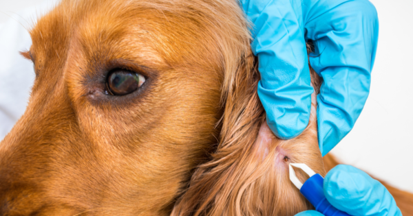
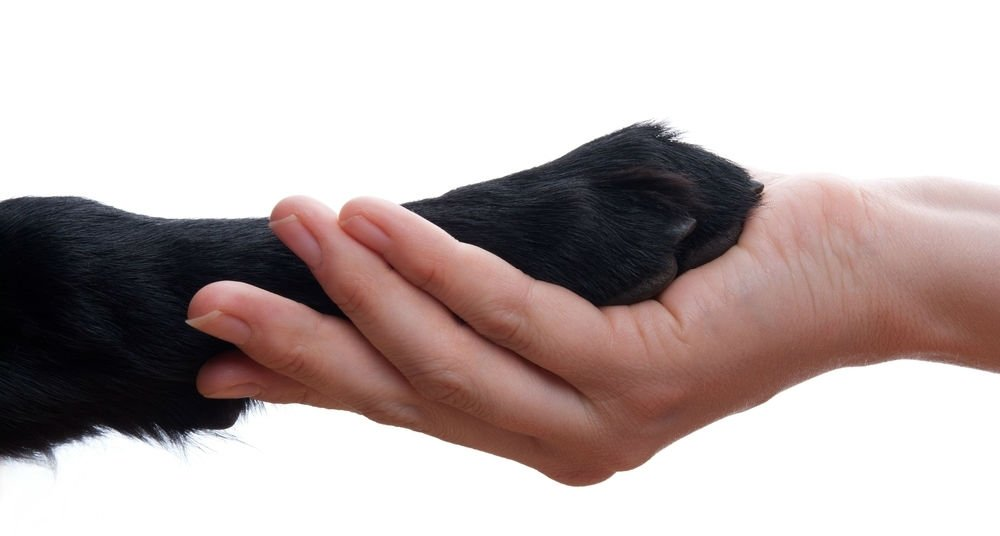
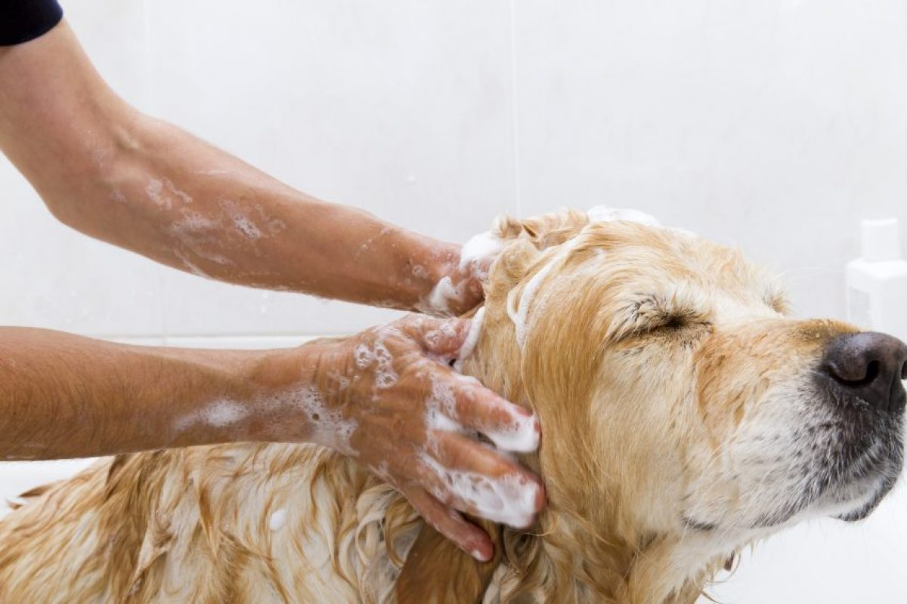

 A pesar de lo que piensan muchas personas, las garrapatas no son insectos, son arácnidos, como los ácaros, los escorpiones y las arañas. Por lo que es recomendado que cuando encuentres una o sospeches que hay una o más en el cuerpo de tu mascota, acudas con un especialista que pueda actuar de la manera más conveniente. Las garrapatas son consideradas como parásitos externos, ya que se alimentan de la sangre de un huésped que principalmente es un animal, pero también puede ser un humano. Al succionar la sangre, se convierten en portadoras eficientes de diversas enfermedades, ya que su forma de alimentarse es lenta y pueden pasar varios días sin que el huésped note su presencia.
 En realidad, las garrapatas no se contagian como un virus, sino que éstas pareciera que “eligen” a sus huéspedes. Las garrapatas crecen de huevos puestos en espacios de tierra, grietas o rocas donde existe humedad, Cuando nacen, suben por estos lugares (también pueden alojarse en mantas, alfombras o almohadas) en espera de que un animal o una persona pase por ahí para soltarse y trepar al nuevo huésped en busca de una fuente de alimentación.
 Como primer consejo, es muy importante que estés siempre atento al comportamiento de tu perro y a su higiene. Revisa diariamente su pelaje mientras lo cepillas, especialmente si han pasado tiempo al aire libre, además, las pulgas y las garrapatas son las principales causantes de que una mascota se rasque más de lo normal. De esta forma podrás notar anomalías. A primera vista una garrapata es una protuberancia similar a un lunar grande o una verruga, pueden ser de colores entre tonalidades de marrón y amarillo o de color negro con manchas blancas. Mientras más tiempo tienen alimentándose de la sangre de tu mascota, mayor será su tamaño. Lo más recomendable es retirar la garrapata de tu perro de forma adecuada. Como la garrapata se sostiene fuertemente a la piel al estar succionando la sangre, si llevas a cabo un mal proceso, corres el riesgo de partirla en dos liberando sustancias que son contagiosas de enfermedades. Por ello, lo mejor será acudir a su veterinario.